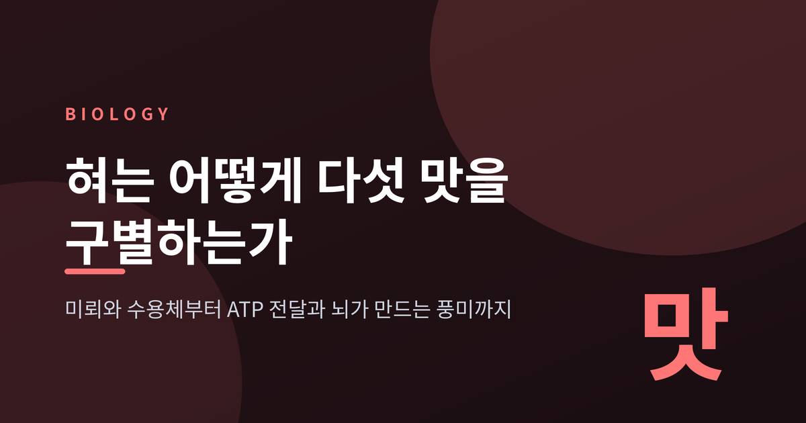
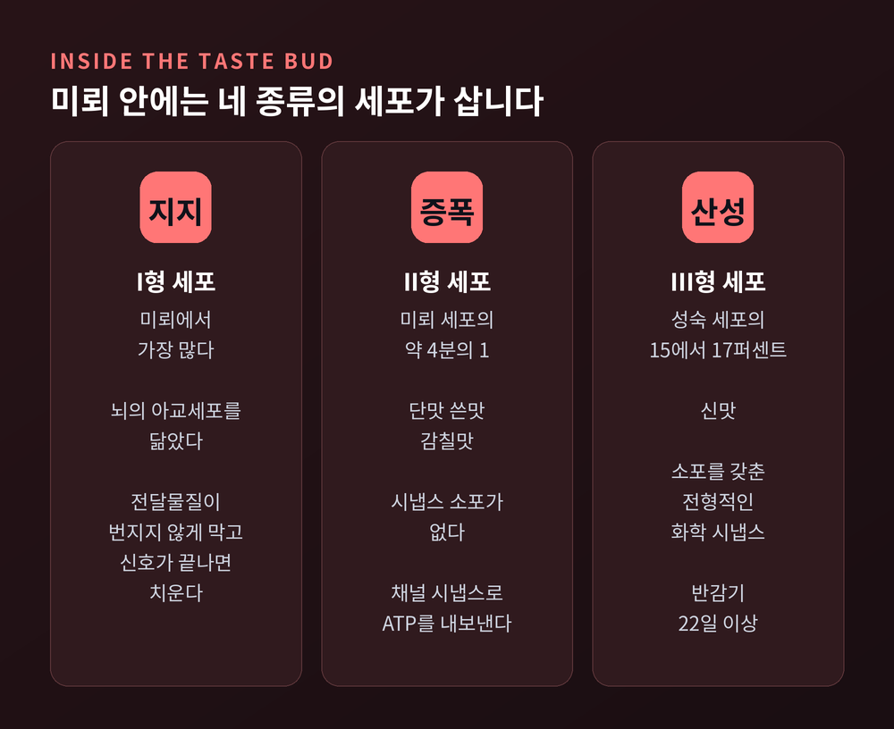
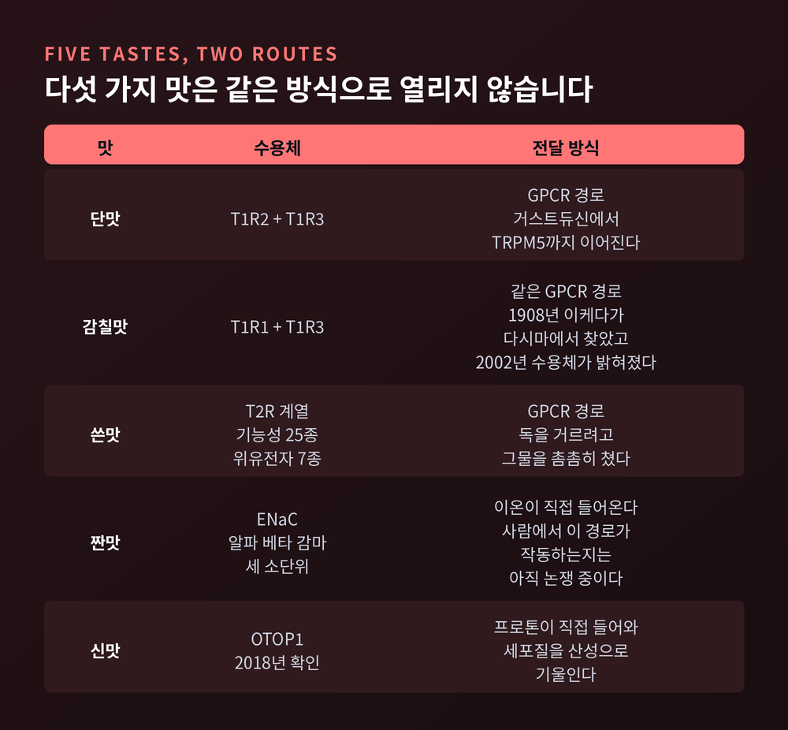
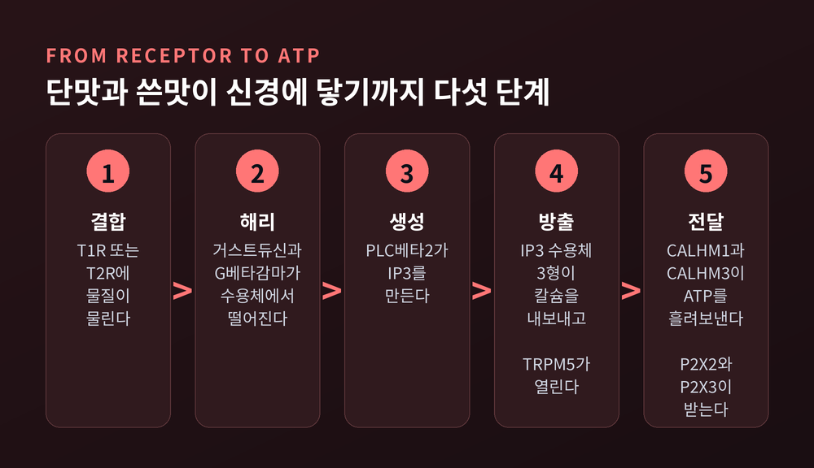
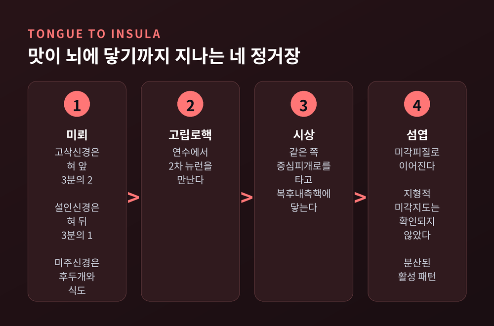
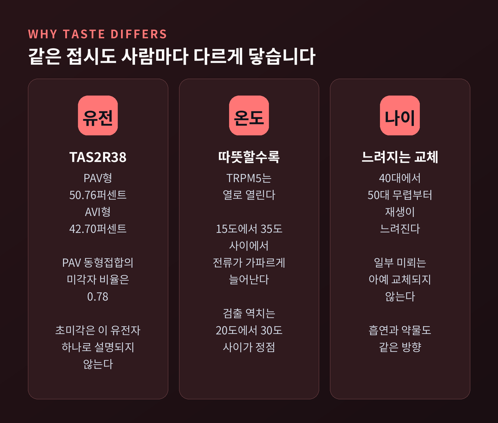

미각의 원리, 혀가 다섯 가지 맛을 구별하고 뇌가 풍미를 만드는 법
오늘은 미각의 원리를 분자 단위에서부터 정리해 보겠습니다. 먼저 결론을 말씀드리면, 다섯 가지 기본맛은 하나의 공통 장치로 감지되지 않습니다. 세 가지 맛은 수용체를 돌려 신호를 증폭하고, 두 가지 맛은 이온이 통로로 직접 들어옵니다. 그리고 우리가 식탁에서 느끼는 것은 엄밀히 말해 맛이 아니라 풍미입니다. 아래 수치는 모두 리서치 단계에서 확인한 자료에 근거합니다.

혀 위의 감지기는 4천 개 남짓입니다
미뢰는 생각보다 많지 않습니다.
교과서적으로는 사람의 미뢰를 약 4,000개로 봅니다. 개별 계수 연구를 종합해 약 5,000개로 추정하는 자료도 있고, 임상 일반 자료는 2,000개에서 10,000개까지 폭넓게 적습니다. 숫자가 이렇게 흔들린다는 사실 자체가, 혀를 세는 일이 간단하지 않다는 뜻입니다.
위치는 비교적 분명합니다. 전체 미뢰의 약 75퍼센트가 혀 등쪽의 유두에 있습니다.
유두는 네 종류인데, 이 가운데 미뢰를 품는 것은 셋뿐입니다. 버섯유두가 전체 미뢰의 약 25퍼센트, 성곽유두가 50퍼센트, 잎새유두가 25퍼센트를 담당합니다. 혀 표면을 까슬하게 만드는 실유두에는 미뢰가 없습니다. 실유두가 맡는 것은 촉각과 온도와 통각입니다.
성곽유두는 혀 뒤쪽에 아홉 개가 V자로 늘어서 있고, 하나의 원형 고랑 벽에 약 250개의 미뢰가 붙어 있습니다. 잎새유두는 양 측면에 두 개뿐이지만 각각 약 600개를 품습니다. 버섯유두는 평균 195개 정도이고, 그중 87퍼센트가 혀 앞 2센티미터 안에 몰려 있습니다.
미뢰 하나에는 미세포가 30개에서 100개쯤 들어 있습니다.
미뢰 안에는 네 종류의 세포가 삽니다
미세포는 형태에 따라 I형부터 IV형까지 나뉩니다. 이 가운데 실제로 맛을 받는 것은 II형과 III형 둘뿐입니다.
I형은 미뢰에서 가장 흔한 세포입니다. 뇌의 아교세포를 닮았습니다. 전달물질이 옆으로 번지지 않게 막고, 신호가 끝나면 치웁니다. 세포 표면의 NTPDase2라는 효소로 방출된 ATP를 분해하는 일도 맡습니다. 맛을 느끼는 세포가 아니라 맛을 느끼는 자리를 관리하는 세포인 셈입니다.
II형은 미뢰 세포의 약 4분의 1을 차지하며, 단맛과 쓴맛과 감칠맛을 담당합니다. 특이한 점이 하나 있습니다. 이 세포에는 시냅스 소포가 없습니다.
III형은 성숙 세포의 15에서 17퍼센트 정도이고, 신맛을 맡습니다. 소포를 갖춘 전형적인 화학 시냅스를 신경섬유와 만듭니다. 미각세포 중에서 가장 오래 사는 쪽이기도 합니다.
IV형은 기저막에 놓인 전구세포입니다. 나머지 세 종류로 자라날 예비 인력입니다.
수명은 자주 오해받는 항목입니다. "미뢰는 열흘마다 새로 난다"는 말이 널리 퍼져 있지만, 실제 측정값은 이틀에서 3주 이상까지 흩어져 있습니다. II형은 약 14일에서 30일, III형은 반감기가 최소 22일입니다. 평균값 하나로 뭉뚱그리기 어려운 분포입니다.

다섯 가지 맛은 같은 방식으로 열리지 않습니다
여기가 미각 연구에서 가장 흥미로운 분기점입니다.
단맛은 T1R2와 T1R3이 짝을 이룬 이형이량체가 받습니다. 감칠맛은 T1R1과 T1R3의 조합이 받습니다. 두 수용체 모두 T1R3을 공유합니다. 이들은 class C G단백질연결수용체이며, 비너스파리지옥 도메인이라 불리는 큰 세포외 구조에 물질이 물립니다. 이름 그대로 파리지옥이 잎을 닫듯 접히는 모양입니다.
쓴맛은 전략이 다릅니다. 사람의 TAS2R 유전자는 기능하는 것이 25개, 기능을 잃은 위유전자가 7개입니다. 단맛과 감칠맛을 소수의 수용체가 넓게 받는다면, 쓴맛은 25종으로 잘게 나눠 받습니다. 독을 걸러내는 방어 기능이라는 점을 떠올리면 납득이 갑니다. 놓쳐서는 안 되는 신호이므로 그물을 촘촘히 친 것입니다.
짠맛과 신맛은 아예 다른 길을 씁니다. 수용체 단백질을 거치지 않고, 이온이 통로로 직접 들어옵니다.
낮은 농도의 소금은 아밀로라이드 민감성 상피나트륨채널, 즉 ENaC으로 감지됩니다. 알파와 베타와 감마, 세 소단위가 조립되어야 작동하며 저농도 염 전달에는 알파 소단위가 관여합니다. 설치류 실험에서 아밀로라이드를 주면 나트륨염과 비나트륨염을 구분하지 못하게 됩니다.
다만 여기에는 단서가 필요합니다. 사람에게도 아밀로라이드 민감성 짠맛 경로가 존재하는지는 아직 논쟁 중입니다. 사람 조직에서 베타와 감마와 델타 소단위는 여러 유두에서 관찰되지만, 알파 소단위는 성곽유두 미세포에 국한되어 나타납니다. 최근에는 염소이온 감지에 TMC4가 관여한다는 연구도 더해졌습니다. 짠맛은 다섯 맛 가운데 가장 정리가 덜 된 영역입니다.

신맛의 문지기는 2018년에야 이름을 얻었습니다
다섯 맛 중 신맛 센서가 가장 늦게 밝혀졌습니다.
2018년 1월 25일, 서던캘리포니아대학의 에밀리 라이먼 연구실이 오토페트린-1, 줄여서 OTOP1을 신맛 센서로 보고했습니다. RNA 시퀀싱으로 신맛 세포에만 켜지는 유전자를 추린 뒤, 대학원생 유샹 투가 후보를 하나씩 검증해 프로톤을 통과시키는 단백질을 찾아냈습니다.
OTOP1은 그때까지 알려지지 않은 종류의 프로톤 선택적 이온채널이었습니다. 더 뜻밖인 것은 이 채널이 속귀의 평형 감각에도 관여한다는 사실입니다. 신맛과 균형감각이 같은 단백질 계열로 이어져 있었습니다.
작동은 단순합니다. 프로톤이 세포 안으로 들어오고, 세포질이 산성으로 기울고, 막전위가 탈분극하고, 활동전위가 이어집니다. Otop1을 없앤 생쥐는 III형 세포의 세포내 산성화가 무너지고 구연산이나 염산에 대한 미각신경 반응이 크게 줄었습니다.
식초처럼 약한 산은 조금 다릅니다. 중성 상태로 막을 그냥 통과해 들어가거나 아직 밝혀지지 않은 경로를 타기도 합니다. 어느 쪽이든 결과는 세포 안의 산성화로 수렴합니다.
이야기는 아직 끝나지 않았습니다. 2023년에는 OTOP1이 염화암모늄의 맛 센서이기도 하다는 결과가 나왔습니다. 2025년 연구는 이 채널이 세포의 첨단에 자리하며 III형 세포에만 국한되지 않는다고 보고했습니다. 깔끔했던 그림이 다시 복잡해지는 중입니다.
단맛과 쓴맛이 쓰는 전령은 똑같습니다
앞서 II형 세포에 시냅스 소포가 없다고 적었습니다. 그렇다면 신호는 어떻게 넘어갈까요.
답은 채널입니다. II형 세포는 CALHM1과 CALHM3이 여섯 개로 모여 만든 큰 통로를 열어 ATP를 그대로 흘려보냅니다. 소포에 담아 터뜨리는 방식이 아닙니다. 신경섬유와 맞닿은 이 구조를 채널 시냅스라고 부릅니다. CALHM3이 있어야 생체 내와 같은 빠른 전압 의존 개폐가 생기고, 이 채널은 신경섬유가 닿는 기저측 막으로 알아서 배치됩니다.
흘러나온 ATP는 미각신경의 P2X2와 P2X3 수용체에 붙습니다. 이후 I형 세포의 효소가 이를 분해해 신호를 끝냅니다.
결정적인 실험이 있습니다. P2X2와 P2X3을 함께 없애면 모든 맛의 전달이 사라집니다.
단맛에도, 쓴맛에도, 감칠맛에도 같은 ATP가 쓰입니다. 그렇다면 맛은 무엇으로 구별될까요. 전달물질의 종류가 아니라 어느 세포가 켜졌는가로 구별됩니다. 신호의 내용이 아니라 신호의 출처가 맛의 정체를 정합니다.

혀의 미각 지도는 번역 사고에서 태어났습니다
학교에서 배운 그 그림, 혀끝은 단맛이고 혀 뒤는 쓴맛이라는 지도는 사실이 아닙니다.
시작은 1901년 독일 학자 다비트 헤니히였습니다. 그는 네 가지 맛에 대한 혀 부위별 역치를 쟀고, 부위마다 민감도가 조금씩 다르다는 것을 확인했습니다. 여기까지는 맞습니다. 다만 차이가 극히 미미했습니다.
문제는 그다음입니다. 1940년대 초 하버드의 심리학사가 에드윈 보링이 헤니히의 자료를 그래프로 옮겼습니다. 부실한 독일어 번역을 바탕으로 작업하면서 미세한 차이를 과장했고, 더 중요하게는 헤니히가 하지 않은 주장을 덧붙였습니다. 혀의 특정 부위가 특정 맛을 감지한다는 문장입니다.
1970년대에 생리학자 버지니아 콜링스가 실험을 다시 했습니다. 민감도 차이는 있지만 실질적 의미는 거의 없었습니다. 모든 맛은 혀의 모든 영역에서 느껴집니다.
분자 수준의 증거도 같은 방향입니다. 25개 TAS2R 유전자 전부가 혀 뒤쪽 성곽유두의 미각세포에서 발현되지만, 그렇다고 쓴맛이 뒤에서만 나는 것은 아닙니다.
한 세기 가까이 교과서에 실렸던 그림이 번역과 해석의 사고에서 비롯되었다는 사실은, 과학이 어떻게 굳어지고 어떻게 풀리는지를 보여줍니다.
맛이 뇌에 닿기까지 지나는 길
혀에서 뇌까지는 세 개의 신경이 나눠 맡습니다.
혀 앞쪽 3분의 2는 안면신경의 가지인 고삭신경이, 혀 뒤쪽 3분의 1은 설인신경이 담당합니다. 후두개와 식도의 미뢰는 미주신경이 받습니다. 혀 앞의 버섯유두는 고삭신경이, 성곽유두는 설인신경이 각각 독점적으로 지배합니다.
세 신경은 연수의 고립로핵에서 2차 뉴런을 만납니다. 사람에서는 이 섬유가 같은 쪽 중심피개로를 타고 올라가 시상의 복후내측핵에 닿습니다. 거기서 다시 같은 쪽 미각피질과 섬엽으로 이어집니다. 흔히 섬엽을 미각의 중계소처럼 말하지만, 섬엽은 2차 뉴런이 있는 자리가 아닙니다.
피질에서 맛이 어떻게 표상되는지는 여전히 논쟁 중입니다. 세포마다 담당 맛이 정해져 있다는 표지선 부호화와, 대부분의 세포가 여러 맛에 반응한다는 조합 부호화가 맞서 있습니다.
사람 뇌영상 연구들은 지형적 미각지도 모델을 지지하지 않습니다. 특정 맛에 최대로 반응하는 세포가 한 자리에 모여 있다는 증거가 나오지 않았습니다. 대신 섬엽 미각 영역 안의 분산된 활성 패턴으로 표상된다는 쪽이 우세합니다. 실제로는 좁게 조율된 뉴런과 넓게 조율된 뉴런이 섞여 있는 혼합 전략으로 보입니다. 2026년 6월 발표된 생쥐 연구도 선형 부호화 단위와 범주형 부호화 단위가 함께 작동한다고 보고했습니다.

우리가 느끼는 것은 맛이 아니라 풍미입니다
커피의 향긋함, 딸기의 딸기다움. 이것들은 미각이 아닙니다.
풍미는 미각에 비후방 후각이 더해진 복합 경험입니다. 입안의 음식에서 나온 향 분자가 입천장 뒤를 돌아 비인두를 거쳐 비강 점막에 닿습니다. 코로 킁킁대며 맡는 냄새와는 경로가 다릅니다.
시점도 정해져 있습니다. 비후방 후각은 날숨에 의존합니다. 삼키고 숨을 내쉬는 그 짧은 순간에 풍미가 완성됩니다.
여기에 삼차신경 감각이 얹힙니다. 온도, 질감, 알싸함 같은 것들입니다. 결국 한 입의 경험은 미각과 두 방향의 후각과 삼차신경과 텍스처가 함께 만든 결과물입니다.
그래서 "맛이 안 난다"는 호소는 대개 후각의 문제입니다. 2020년 연구는 후각 저하를 자각하면서도 풍미는 정상이라고 느끼는 환자 19명을 검사했습니다. 11명이 무후각, 8명이 후각저하로 분류되었고 비후방 검사 점수도 같은 범위였습니다. 주관적으로 느끼는 풍미와 실제 검사 결과 사이에는 상관관계가 없었습니다. 후각 상실 없이 순수한 미각만 잃는 경우는 드뭅니다.
코로나19 때 이 문제가 크게 드러났습니다. 13만 8천여 명을 분석한 메타연구는 미각 기능 이상을 36.6퍼센트로, 다른 메타연구는 48.1퍼센트로 보고했습니다. 편차가 큰 이유 중 하나는 측정 방식입니다. 객관적 검사를 쓴 연구는 59.2퍼센트, 주관적 보고는 47.3퍼센트였습니다. 하위 유형으로는 미각이상이 41.3퍼센트로 가장 흔했고, 미각저하 33.5퍼센트, 무미각 28.0퍼센트가 뒤를 이었습니다. 여러 연구자는 환자들이 미각 상실과 풍미 상실을 혼동했을 가능성이 크다고 봅니다.
같은 접시도 사람마다 다르게 닿습니다
쓴맛에는 유명한 개인차가 있습니다.
TAS2R38 유전자는 페닐티오카바마이드, 줄여서 PTC와 프로필티오우라실에 반응하는 수용체를 만듭니다. 이 유전자의 기능성 변이 세 개가 아미노산을 바꾸고, 그 조합으로 미각자형인 PAV와 미맹형인 AVI가 갈립니다. 6,000개 이상의 염색체를 합친 자료에서 PAV가 50.76퍼센트, AVI가 42.70퍼센트를 차지했습니다.
다만 유전형이 표현형을 그대로 정하지는 않습니다. 한 연구에서 PAV 동형접합의 미각자 비율은 0.78, 이형접합은 0.48, AVI 동형접합은 0.1이었습니다. 특히 중간 미각자와 초미각자 사이에는 유전형이 크게 겹칩니다. 초미각 현상은 TAS2R38 하나로 설명되지 않습니다. 한계를 인정할 수밖에 없는 대목입니다.
온도도 맛을 바꿉니다. GPCR 경로의 핵심 채널인 TRPM5는 열로 활성화되며, 15도에서 35도 사이에서 전류가 가파르게 늘어납니다. 따뜻한 음료가 더 달게 느껴지는 이유입니다. 맛 검출 역치는 온도에 대해 U자형을 그리며 20도에서 30도 사이에서 정점을 이룹니다. 인구의 절반가량은 혀의 온도를 바꾸는 것만으로 맛을 느끼는데, 따뜻하게 할 때는 단맛이, 차갑게 할 때는 쓴맛과 신맛이 가장 자주 보고되었습니다.
나이는 조금 더 조용하게 작용합니다. 40대에서 50대 무렵부터 미세포 재생 속도가 느려지고, 일부 미뢰는 아예 교체되지 않습니다. 흡연과 일부 약물, 특정 질환도 같은 방향으로 작동합니다. 다만 "어릴 때 1만 개가 노년에 5천 개로 준다"는 식의 구체적 숫자는 일반 건강정보에서 주로 쓰이는 값이고, 1차 연구에서 동일하게 재확인되지는 않았습니다.

끝으로 한 마디만 더 드리겠습니다.
혀가 하는 일은 생각보다 소박합니다. 단백질에 물질이 물리거나, 이온이 통로로 들어오거나. 둘 중 하나입니다. 그렇게 만들어진 신호는 ATP라는 한 종류의 전령으로 넘어가고, 연수와 시상을 지나 섬엽에 닿습니다.
예전에는 혀가 맛을 느낀다고 생각했습니다. 지금은 혀가 감지하고 뇌가 완성한다고 봅니다.
코를 막고 사탕을 먹어본 적이 있으시다면 이미 아실 것입니다. 남는 것은 달다는 감각 하나뿐입니다. 딸기맛도 포도맛도 사라집니다. 우리가 평생 맛이라고 불러온 것의 대부분은, 실은 코를 통해 들어온 정보였습니다.
그렇다면 미각은 초라한 감각이냐고 물으신다면, 오히려 그 반대라고 답하겠습니다. 다섯 개의 신호만으로 식탁 위 모든 경험의 뼈대를 세우고 있으니 말입니다.